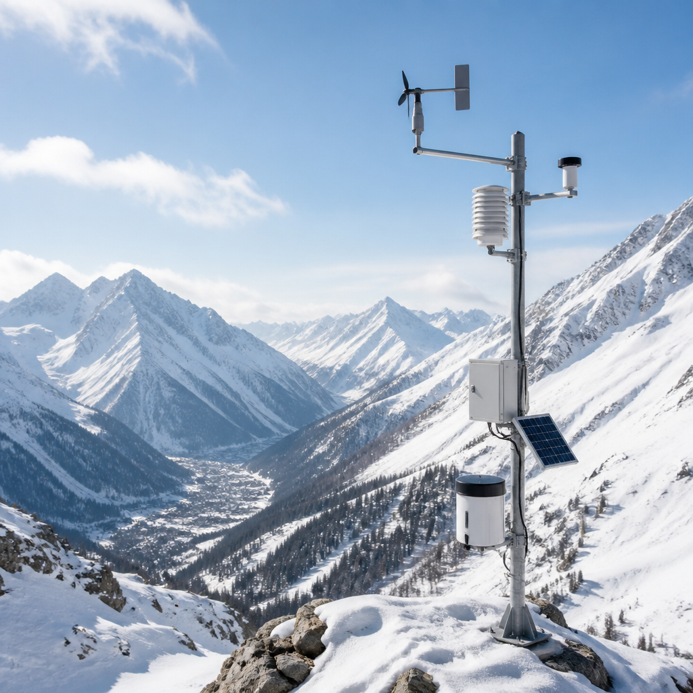
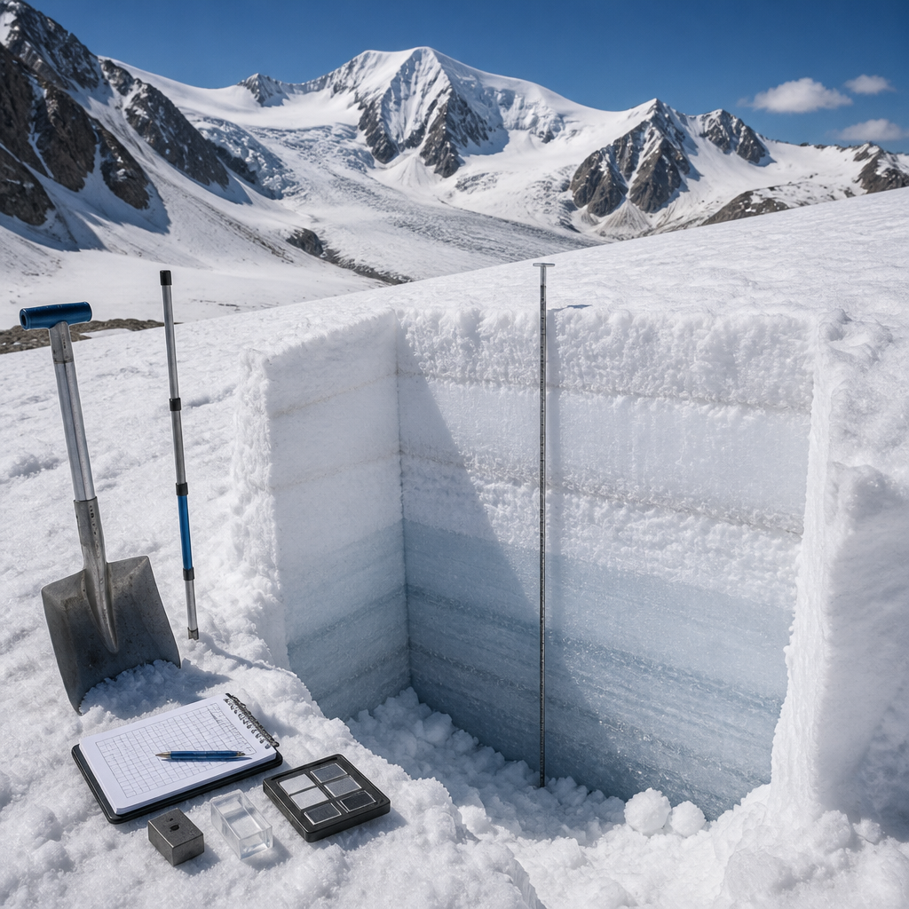

Il Centro Regionale Neve e Valanghe di Arpa Lombardia celebra il suo anniversario raccontando monitoraggi, bollettini e studi sui ghiacciai.
La neve in montagna non è soltanto un elemento del paesaggio invernale o un fattore da considerare per la sicurezza. È anche una riserva d’acqua che può influire sui territori e sui loro equilibri ambientali nei mesi successivi. Per questo il Centro Regionale Neve e Valanghe di Arpa Lombardia osserva il manto nevoso, ne misura lo spessore e ne valuta il contenuto d’acqua, insieme al monitoraggio del pericolo di valanghe e dei ghiacciai.
A Bormio, il Centro ha celebrato il suo settantesimo anniversario con il workshop “La montagna che cambia”. L’incontro è dedicato ai profondi cambiamenti che interessano l’ambiente alpino e alle sfide poste dalla sicurezza, dalla sostenibilità e dall’adattamento climatico. Il programma affronta anche l’evoluzione dei ghiacciai e mette a confronto esperienze maturate sulle Alpi e in altri contesti montani, fino al Nepal.
Conoscere quanta neve è presente e quanta acqua contiene aiuta a comprendere quale disponibilità idrica potrà esserci in seguito. Secondo l’assessore regionale Massimo Sertori, questa conoscenza ha un valore strategico in un contesto di cambiamenti climatici e di crescente attenzione alle risorse idriche: riguarda la gestione dell’acqua, l’agricoltura, la produzione idroelettrica e la capacità dei territori di affrontare la siccità e una maggiore incertezza climatica.
Le attività non si fermano quindi alla stagione fredda. In primavera e in estate il Centro svolge campagne per misurare lo SWE, acronimo di Snow Water Equivalent: è un indicatore usato per quantificare l’acqua contenuta nella neve. Vengono inoltre seguiti diversi ghiacciai lombardi, per determinarne ogni anno il bilancio di massa, cioè la differenza tra la massa che il ghiacciaio accumula e quella che perde.

Il territorio montuoso lombardo seguito dal Centro si estende per 9.291 chilometri quadrati ed è suddiviso in dodici zone omogenee. La rete di monitoraggio comprende 47 stazioni nivometeorologiche automatiche e 27 stazioni manuali. Le stazioni nivometeorologiche raccolgono dati sulla neve e sulle condizioni meteorologiche. A queste informazioni si aggiunge il lavoro sul campo dei tecnici nivologi, specializzati nello studio della neve, che svolgono mediamente circa 130 rilievi itineranti all’anno per valutare la stabilità del manto nevoso.
Alla raccolta e alla condivisione dei dati contribuiscono anche Guide Alpine della Lombardia, Soccorso Alpino della Guardia di Finanza, personale tecnico di Enel e diversi comprensori sciistici. La collaborazione tra soggetti diversi è parte del lavoro del Centro, che fornisce inoltre pareri tecnici sul pericolo di valanghe a supporto degli impianti a fune per il trasporto di persone.
Fra i risultati principali dell’attività c’è la valutazione quotidiana del pericolo valanghe, con il Bollettino di Pericolo Valanghe emesso dal 1° dicembre al 30 aprile. Al bollettino si affianca il Bollettino di Vigilanza Valanghe, rivolto alle attività di protezione civile e utile per elaborare le allerte regionali dedicate a questo rischio. Informazioni tempestive e affidabili, sottolinea Arpa Lombardia, sono fondamentali per una fruizione più sicura dell’ambiente montano.
Il Centro partecipa al Comitato di Indirizzo e Monitoraggio che coordina i Nuclei Tecnici Operativi Valanghe. L’attività contribuisce al monitoraggio di 281 siti valanghivi che interferiscono con infrastrutture e centri abitati, offrendo supporto alle decisioni degli enti locali durante le emergenze. La cartografia valanghe regionale, pubblicata e aggiornata annualmente sul Geoportale della Regione Lombardia, raccoglie invece 9.192 siti valanghivi censiti nell’intero territorio montano lombardo.
Accanto all’operatività, il Centro organizza ogni anno corsi e attività didattiche AINEVA per le figure impegnate nell’osservazione nivologica, nella direzione delle operazioni e nella gestione della sicurezza. La giornata conclusiva del workshop prevede un’escursione didattica al sentiero glaciologico del ghiacciaio dei Forni, in Valfurva, per osservare sul campo i temi affrontati.
Il Centro nacque a Bormio nel 1956, dopo una serie di eventi legati alla caduta di valanghe nel territorio comunale di Livigno. Nel tempo è passato dall’Ispettorato Ripartimentale delle Foreste di Sondrio alla Regione Lombardia, fino al trasferimento ad Arpa Lombardia. Oggi fa parte della direzione tecnica Monitoraggi e Prevenzione del Rischio Naturale. Il suo percorso mostra come l’osservazione della neve, dei ghiacciai e delle valanghe sia diventata uno strumento per conoscere una montagna che cambia e per contribuire alla prevenzione dei rischi.
Il Centro Regionale Neve e Valanghe di Arpa Lombardia compie settant’anni. Monitora neve, condizioni meteorologiche, stabilità del manto nevoso, valanghe e ghiacciai. La sua rete comprende stazioni automatiche e manuali, rilievi sul terreno e collaborazioni con diversi soggetti della montagna.
Questo articolo l'hai letto sul blog di Meteo News Radar: un'app che ti mostra da dove vengono i numeri, invece di limitarsi a dartelo. E ogni mattina ne trovi uno nuovo come questo.